Reading the diagrams
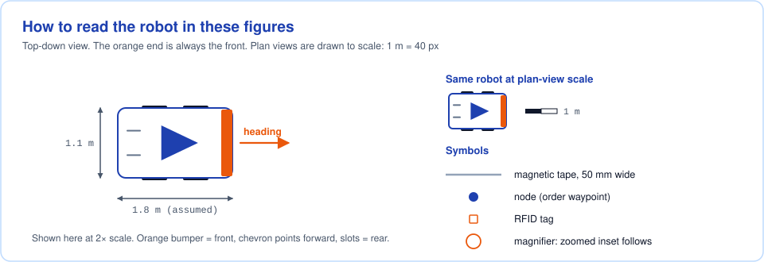
Every requirement carries a status taken from HITO's reply. The letter repeats the colour so the meaning survives greyscale printing:
| Letter | Status | Meaning |
|---|---|---|
| Works today | HITO says the AGV already behaves this way. | |
| Will implement | HITO agrees to build it. | |
| Conditional / to discuss | Agreed only after testing, discussion, or a counter-proposal. | |
| Closed as duplicate | HITO closed it as a repeat of another item. | |
| Process / outside AGV | Joint approval rule, or behaviour HITO places outside the AGV (MQTT broker). | |
| Needs hardware / clarification | Needs new hardware, or HITO didn't understand it. | |
| Not feasible | HITO says the current vehicle can't achieve it. |
Scale and data structure conventions
All plan views share one scale, 1 m = 40 px, and carry a scale bar. Where a requirement is in millimetres or fractions of a degree, an orange magnifier marks the spot and a zoomed inset shows it at its own stated scale. Numbers labelled example values (speeds, braking rate, field sizes, AGV size) are assumptions for illustration; the source document doesn't specify them.
Each section that involves VDA5050 messages ends with a structure figure in UML composition style, showing where each relevant field sits inside its message. The field set follows VDA 5050 version 2.0, abbreviated; check it against the version the two companies agree on.
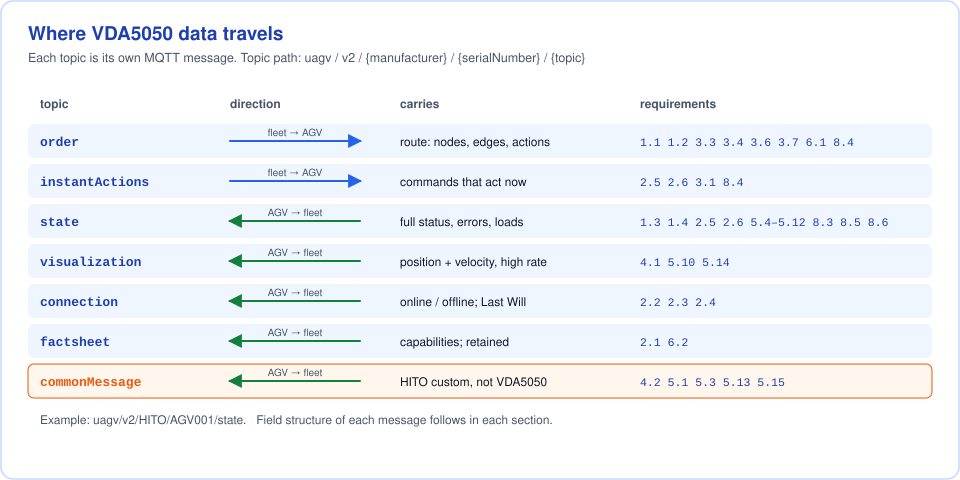
Overview
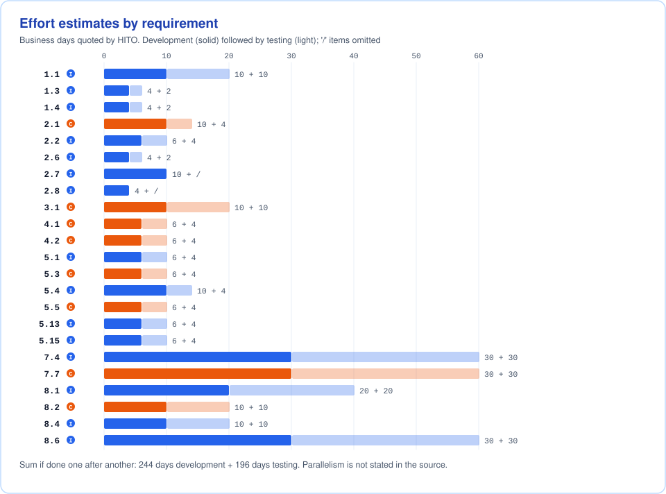
1Order execution and rotation at nodes
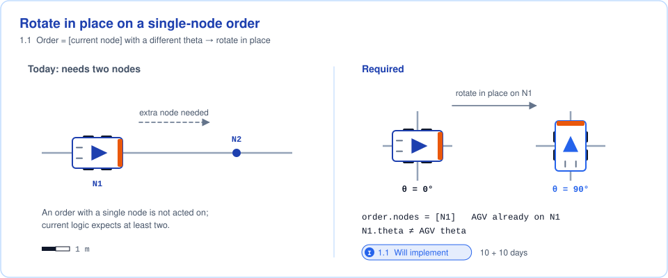
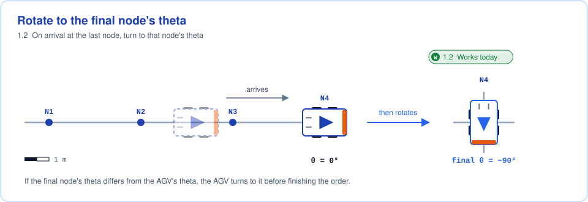
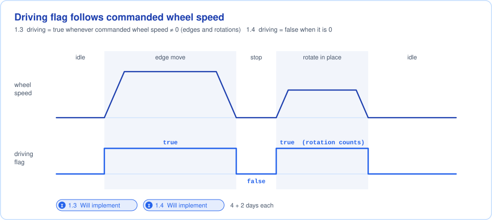
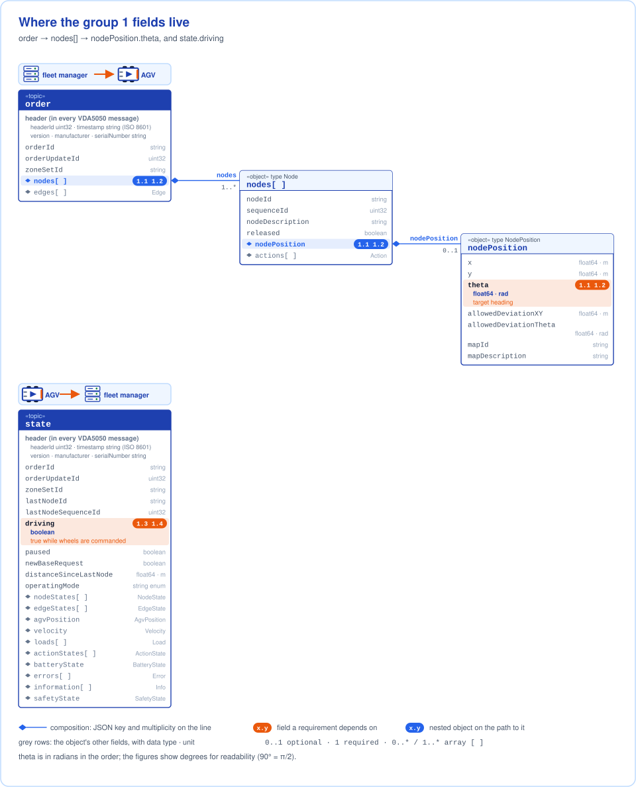
| ID | Requirement | HITO response | Status | Effort |
|---|---|---|---|---|
| 1.1 | When the AGV receives an order containing only a single node, and that node is the AGV's current node, if the theta in the order differs from the current theta, the AGV must rotate in place to the commanded theta. | Can be implemented. Current logic requires two nodes. Firmware update after successful testing. | Will implement | 10 + 10 |
| 1.2 | When the AGV reaches the final node of an order and that node's theta differs from the current theta, the AGV must rotate to the theta specified for the final node. | Already how it works. | Works today | / |
| 1.3 | During all edge movements and rotational movements, the AGV must report its driving state as true whenever the commanded wheel speed is non-zero. | Can be implemented. | Will implement | 4 + 2 |
| 1.4 | When the commanded wheel speed is zero, the AGV must report its driving state as false. | Can be implemented. | Will implement | 4 + 2 |
2MQTT connection, factsheet and action reporting
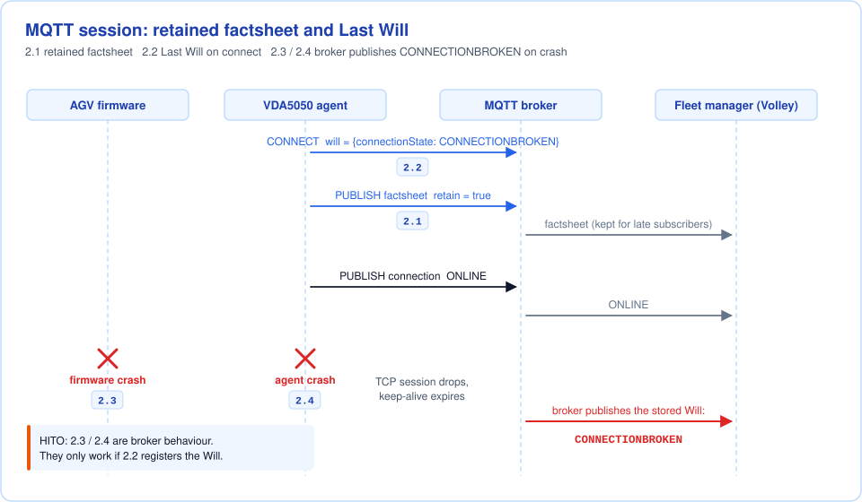
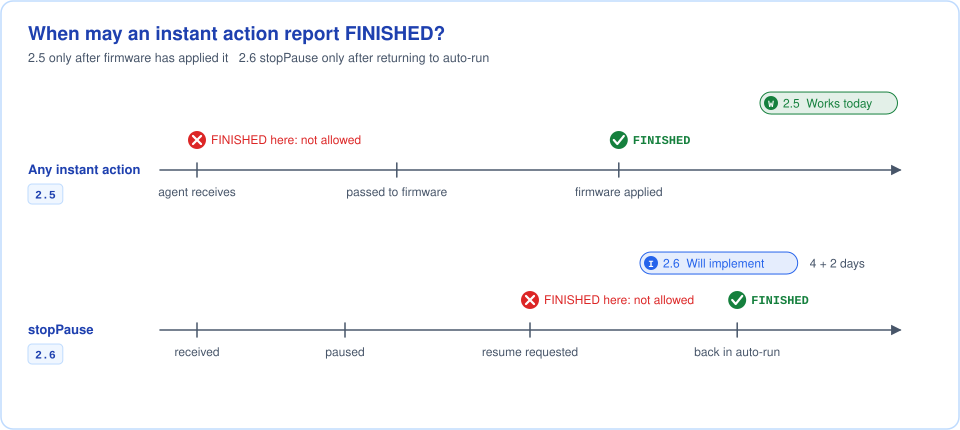
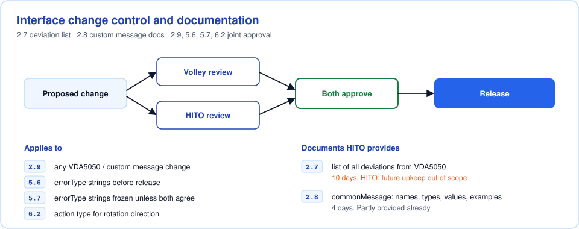
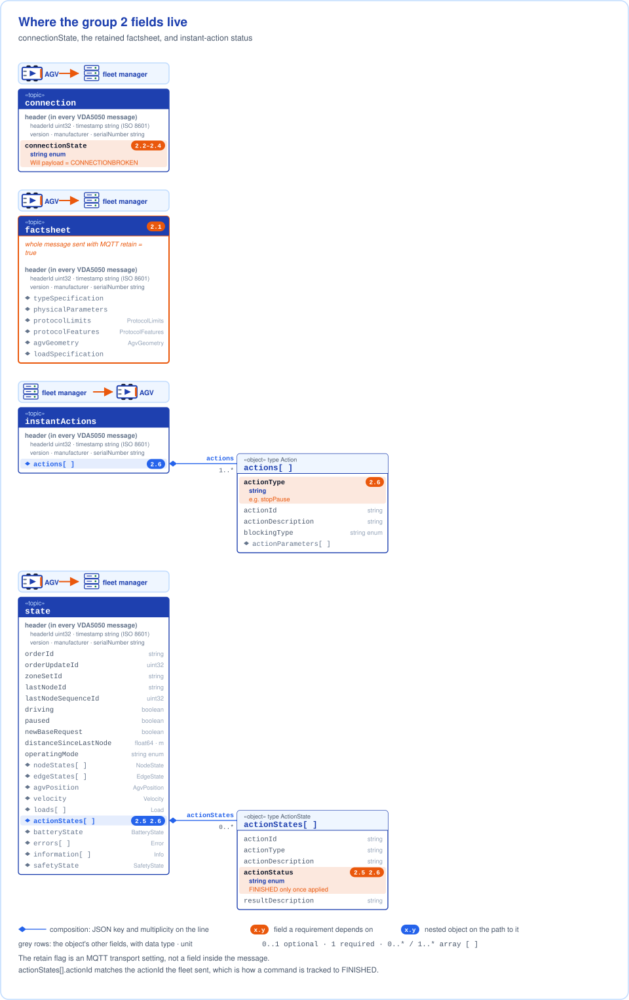
| ID | Requirement | HITO response | Status | Effort |
|---|---|---|---|---|
| 2.1 | The AGV must publish the factsheet message with the MQTT retained flag set to true. | Factsheet already published (sent twice at startup). Volley to list which topics need the retained flag. | Conditional / to discuss | 10 + 4 |
| 2.2 | The AGV must register an MQTT Last Will message on the connection topic, with connectionState set to CONNECTIONBROKEN. | No issues. Firmware update after successful testing. | Will implement | 6 + 4 |
| 2.3 | When the AGV's main firmware shuts down or crashes, the AGV must ensure that the MQTT broker publishes CONNECTIONBROKEN. | Built-in MQTT broker mechanism, unrelated to AGV firmware shutting down or crashing. | Process / outside AGV | / |
| 2.4 | When the AGV's VDA5050 agent shuts down or crashes, the AGV must ensure that the MQTT broker publishes CONNECTIONBROKEN. | AGV cannot guarantee this; governed by the broker's built-in mechanism. | Process / outside AGV | / |
| 2.5 | For an instant action, the AGV may report FINISHED only after the firmware has actually executed and applied the request, not merely because the VDA5050 agent received it. | Already how it works. | Works today | / |
| 2.6 | For the stopPause instant action, the AGV may report FINISHED only after the firmware has returned to the auto-run state. | No issues. Firmware update after successful testing. | Will implement | 4 + 2 |
| 2.7 | HITO must provide updated interface documentation listing all deviations from the current VDA5050 specification. | Future maintenance is outside HITO's scope. Documentation can be updated. | Will implement | 10 + / |
| 2.8 | HITO must fully document all custom messages, including commonMessage: field names, field types, permitted values and example payloads. | Documentation already provided; can be updated later. | Will implement | 4 + / |
| 2.9 | Any change to the VDA5050 interface or custom messages must be jointly reviewed and approved by Volley and HITO before release. | No issues. | Process / outside AGV | / |
3Cancellation, release horizon and stopping precision
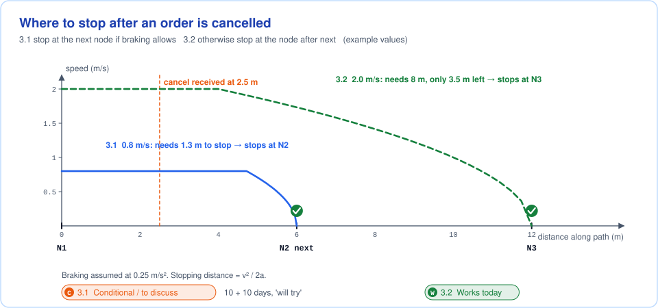
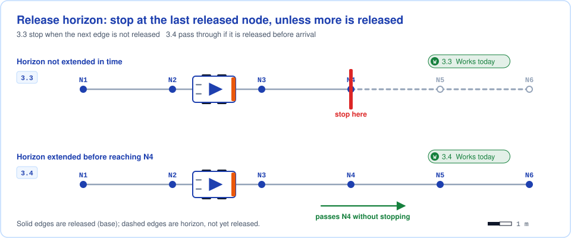
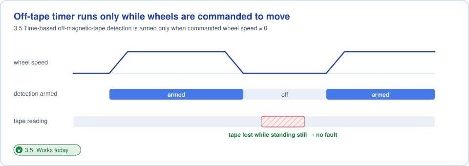
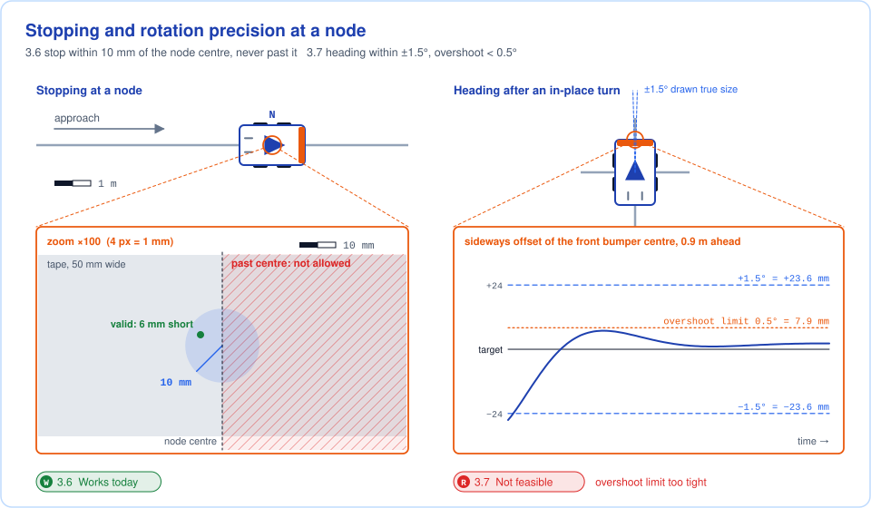
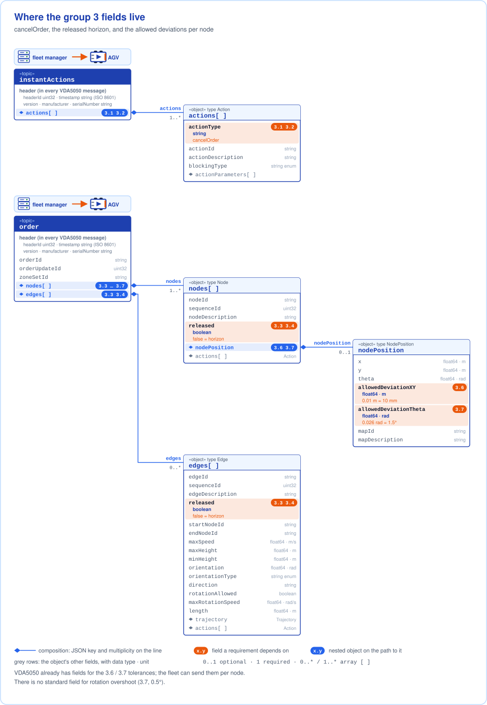
| ID | Requirement | HITO response | Status | Effort |
|---|---|---|---|---|
| 3.1 | When an order is canceled, if the AGV can decelerate to zero at the next node (given speed, deceleration, remaining edge distance), it must stop at the next node. | May be difficult; will try. Update if testing succeeds. | Conditional / to discuss | 10 + 10 |
| 3.2 | When an order is canceled and the AGV cannot decelerate to zero at the next node, it must stop at the node after the next node. | Already how it works. | Works today | / |
| 3.3 | When the AGV reaches the last released node while the following edge is not yet released, it must stop at that last released node. | Already how it works. | Works today | / |
| 3.4 | If the following edge and node are released before the AGV reaches the last released node, the AGV must pass through without stopping. | Already how it works. | Works today | / |
| 3.5 | The AGV must perform time-based off-magnetic-tape detection only when the commanded wheel speed is non-zero. | Already how it works. | Works today | / |
| 3.6 | At any node where a stop is required, the AGV must stop within a 10 mm radius of the node center and must not overshoot the node center. | Standard operating procedure, achieved with the lateral magnetic strip. Abnormal conditions to be discussed separately. | Works today | / |
| 3.7 | After an in-place rotation at a node, the AGV must stop within ±1.5° of the target angle with rotational overshoot of less than 0.5°. | Overshoot below 0.5° is difficult to achieve. In-place rotation at a node cannot be used for positioning. | Not feasible | / |
4Message publishing frequency
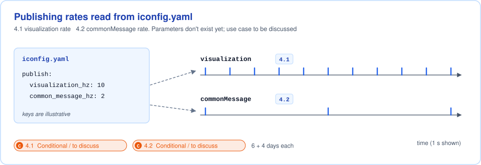
The message structure for group 4 is shown with group 5, which uses the same messages.
| ID | Requirement | HITO response | Status | Effort |
|---|---|---|---|---|
| 4.1 | The AGV must publish visualization messages at the frequency set by parameters in iconfig.yaml. | Parameter not currently available. Use case to be discussed. | Conditional / to discuss | 6 + 4 |
| 4.2 | The AGV must publish commonMessage messages at the frequency set by parameters in iconfig.yaml. | Parameter not currently available. Use case to be discussed. | Conditional / to discuss | 6 + 4 |
5State, commonMessage and error reporting
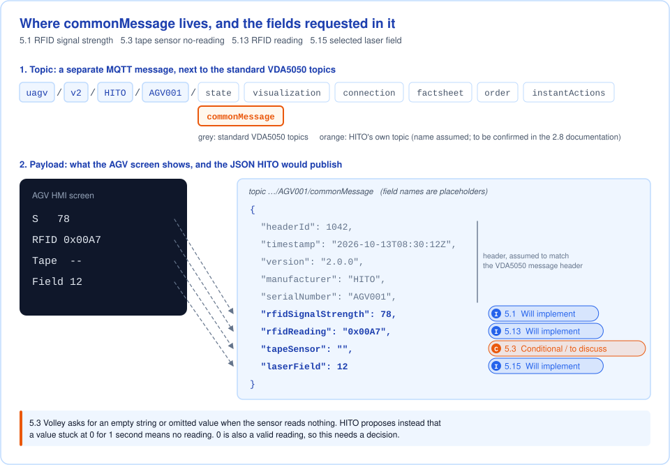
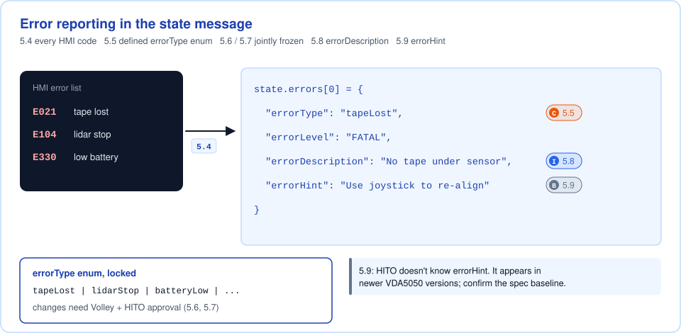
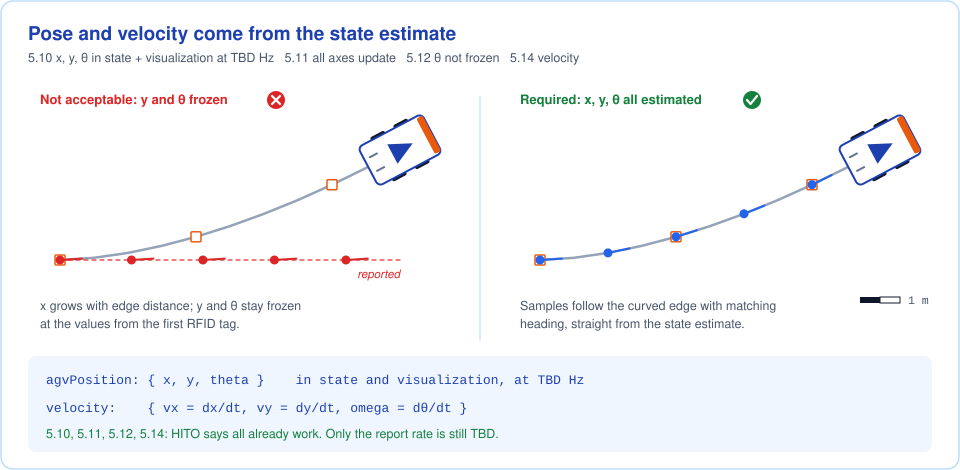
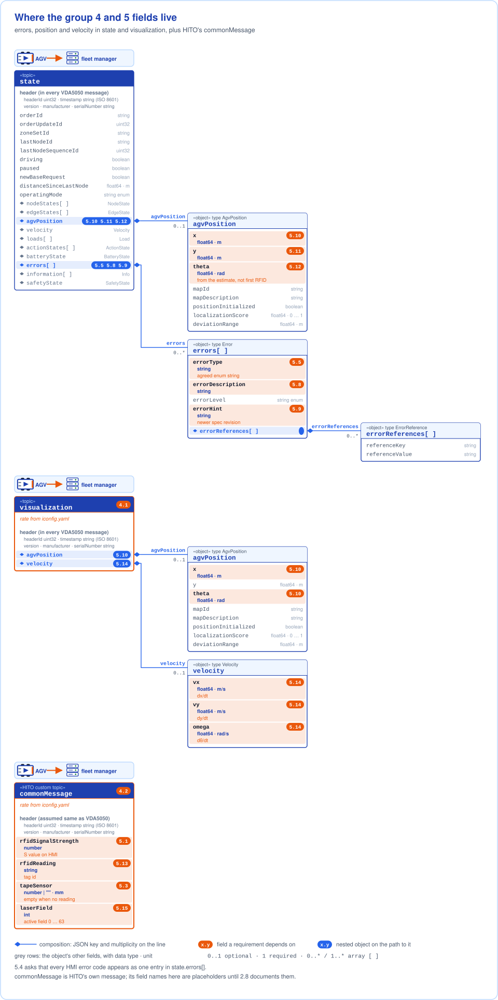
| ID | Requirement | HITO response | Status | Effort |
|---|---|---|---|---|
| 5.1 | The AGV must report RFID signal strength in commonMessage, matching the S value on the AGV's screen. | Not currently available but can be added. | Will implement | 6 + 4 |
| 5.3 | When the magnetic tape sensor has no reading, the AGV must report it in commonMessage as an empty string or an optional value. | Counter-proposal: a value that stays at 0 for 1 second means the sensor has no reading. | Conditional / to discuss | 6 + 4 |
| 5.4 | The AGV must report all error codes shown on the HMI screen in the errors field of the state message. | Missing information will be added later. | Will implement | 10 + 4 |
| 5.5 | The AGV must use defined string enumeration values for errorType rather than undefined raw strings. | Can be added after discussion and agreement. | Conditional / to discuss | 6 + 4 |
| 5.6 | The errorType string values must be jointly reviewed and approved by Volley and HITO before release. | No issues. | Process / outside AGV | / |
| 5.7 | The errorType string values must not change unless both Volley and HITO agree. | No issues. | Process / outside AGV | / |
| 5.8 | The AGV must populate errorDescription for every reported error. | No issues; can be added later. (No estimate given.) | Will implement | / |
| 5.9 | The AGV may populate errorHint for any reported error. | HITO does not understand what this means. | Needs hardware / clarification | / |
| 5.10 | The AGV must report state-estimated x, y and theta in agvPosition in both state and visualization messages, at a TBD Hz frequency to be agreed. | Already how it works. (Frequency still TBD.) | Works today | / |
| 5.11 | The AGV must continuously update x, y and theta from its state estimate, not update one axis by edge distance while keeping the other unchanged. | Already how it works. | Works today | / |
| 5.12 | The AGV must report theta from its state estimate, not a fixed value derived from the first RFID reading. | Already how it works. | Works today | / |
| 5.13 | The AGV must report the actual RFID reader reading in commonMessage, matching the RFID value on the AGV's screen. | No issues; can be added later. | Will implement | 6 + 4 |
| 5.14 | The AGV must report velocity in visualization: the derivatives of x, y and theta. | Already available. | Works today | / |
| 5.15 | The AGV must report the currently selected laser protective field in commonMessage. | No issues; can be added later. | Will implement | 6 + 4 |
6Rotation direction set by actions
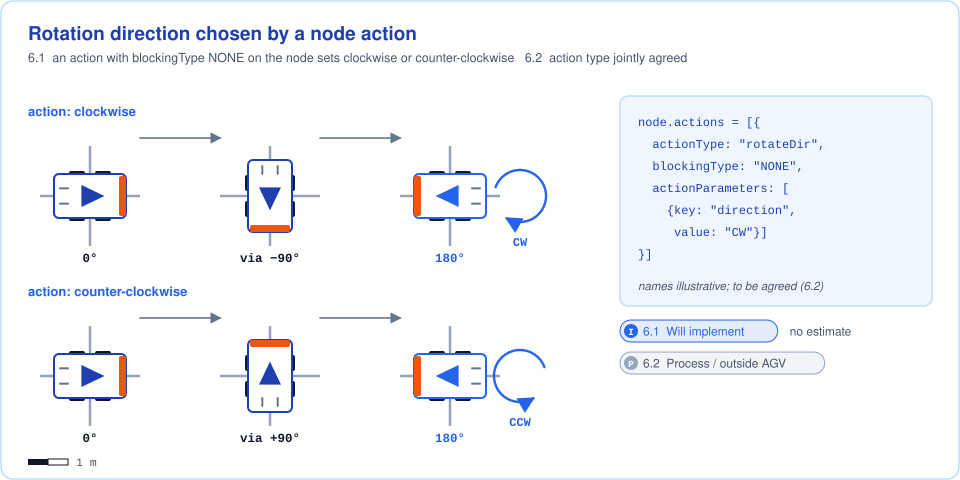
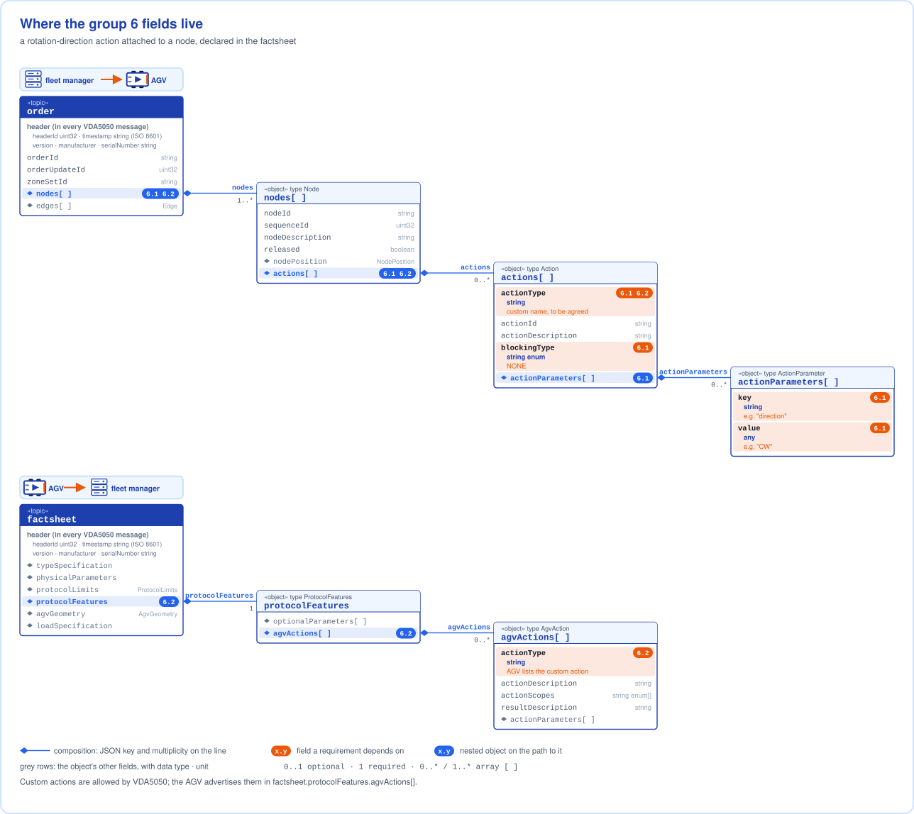
| ID | Requirement | HITO response | Status | Effort |
|---|---|---|---|---|
| 6.1 | The AGV must rotate to a node's theta in the direction given by an action attached to that node with blockingType NONE. | Can be added; released after successful testing. (No estimate given.) | Will implement | / |
| 6.2 | The action type used to specify rotation direction must be jointly reviewed and approved by Volley and HITO. | No issues. | Process / outside AGV | / |
7Magnetic tape tracking and deceleration
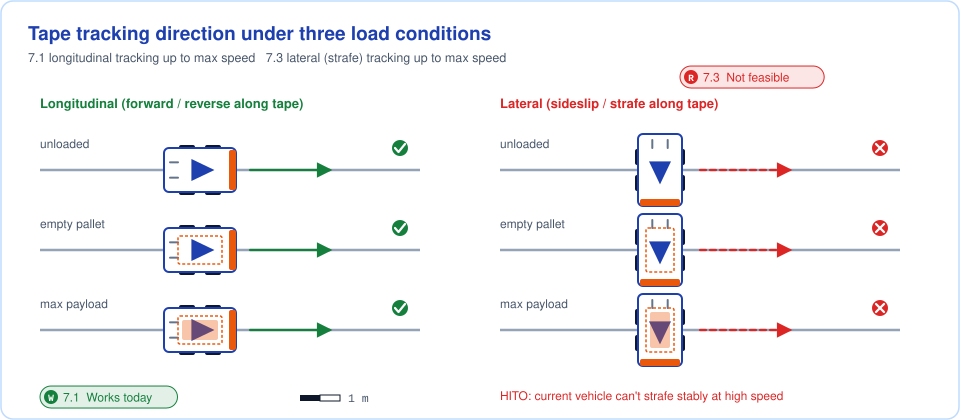
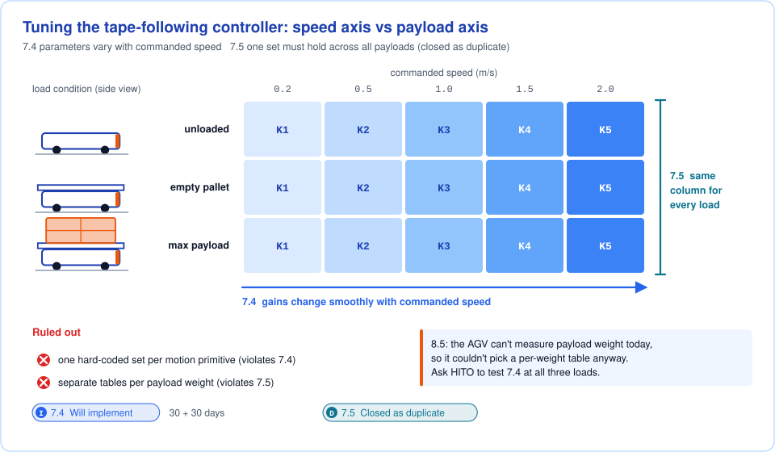
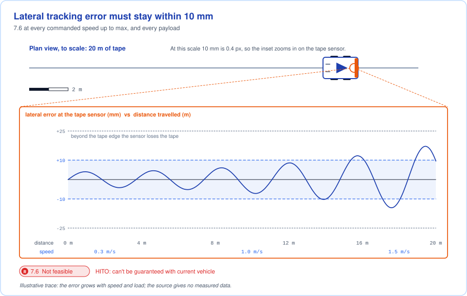
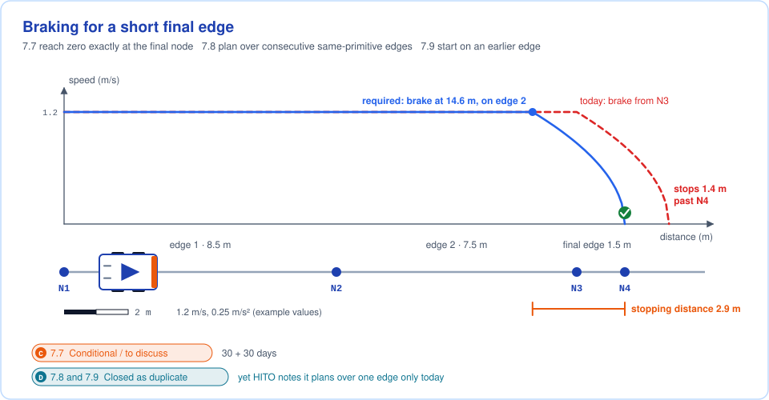
Group 7 is internal control behaviour and adds no VDA5050 fields, so it has no structure figure.
| ID | Requirement | HITO response | Status | Effort |
|---|---|---|---|---|
| 7.1 | Unloaded, with empty pallet and at max payload, the AGV must stably track the tape at all longitudinal speeds up to its maximum. | Expected behavior under normal conditions. | Works today | / |
| 7.3 | Unloaded, with empty pallet and at max payload, the AGV must stably track the tape at all lateral (sideslip / strafe) speeds up to its maximum. | Cannot be implemented: current vehicle model can't do stable high-speed lateral movement. | Not feasible | / |
| 7.4 | The AGV must schedule tape tracking control parameters dynamically from the commanded speed, not hard-code them per motion primitive. | Feasible. Update after successful testing. | Will implement | 30 + 30 |
| 7.5 | The AGV must schedule tape tracking parameters so a single set covers all payload conditions, not hard-coded per payload weight. | Duplicates a requirement above. | Closed as duplicate | / |
| 7.6 | Across all commanded speeds and all payloads, the AGV must keep lateral tape tracking error within 10 mm. | Cannot be guaranteed with the current vehicle model. | Not feasible | / |
| 7.7 | Regardless of the final edge's length, the AGV must start decelerating early enough to reach zero at the final node without overshooting. | Difficult. Will attempt later; update if testing succeeds. | Conditional / to discuss | 30 + 30 |
| 7.8 | The AGV must compute the deceleration start point from the total remaining distance across consecutive edges with the same motion primitive, not only the final edge. | Duplicate. Currently calculations only work along one edge. | Closed as duplicate | / |
| 7.9 | If the final edge is shorter than the stopping distance, the AGV must begin decelerating on an earlier edge. | Duplicates a requirement above. | Closed as duplicate | / |
8Lidar fields, payload, coupling and remote control
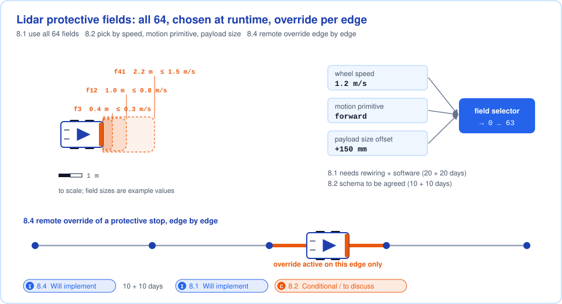
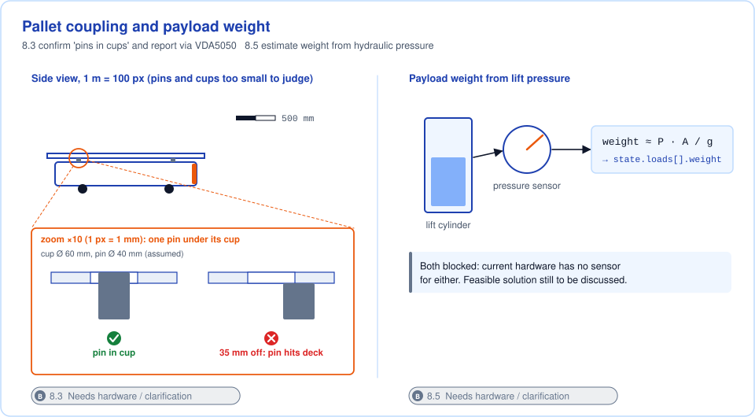
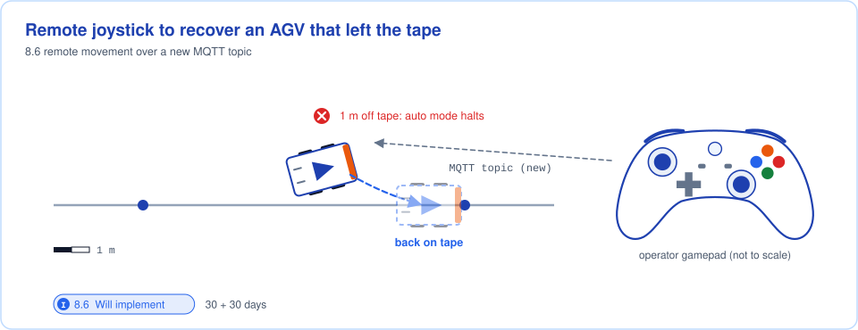
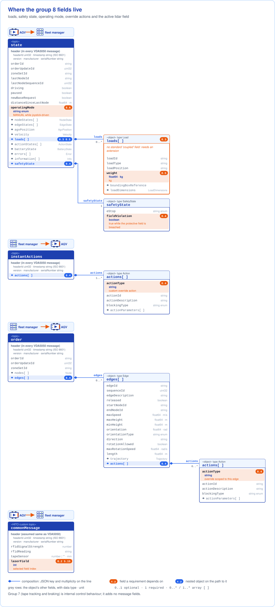
| ID | Requirement | HITO response | Status | Effort |
|---|---|---|---|---|
| 8.1 | The AGV must use all 64 available laser protective (lidar) fields. | Can be implemented by changing the electrical wiring and adding software. | Will implement | 20 + 20 |
| 8.2 | The AGV must select the lidar field from wheel speed, motion primitive and a runtime-configurable payload size offset. Schema to be agreed. | Good idea; can be added after discussion. | Conditional / to discuss | 10 + 10 |
| 8.3 | The AGV must actively confirm whether a pallet is correctly coupled ('pins in cups') and report it via VDA5050. | Current hardware doesn't support it; feasible solution to be discussed. | Needs hardware / clarification | / |
| 8.4 | The AGV must support remote override of a laser protective stop during operation, applied edge by edge. | Can be implemented as part of the instant action function. | Will implement | 10 + 10 |
| 8.5 | The AGV must estimate payload weight from hydraulic pressure and publish it as payload data in state. | Current hardware doesn't support it; feasible solution to be discussed. | Needs hardware / clarification | / |
| 8.6 | The AGV may support remote joystick / remote movement for recovery, e.g. when off the magnetic tape. | Can be implemented with a new topic interface. Update after successful testing. | Will implement | 30 + 30 |
Points to raise with HITO
7.5 is not a duplicate of 7.4. 7.4 asks for parameters that vary with commanded speed; 7.5 asks for one parameter set that holds across every payload. A speed-scheduled table kept separately per payload would meet 7.4 and fail 7.5. Because the AGV can't measure payload weight (8.5), a single robust set is the only workable design anyway. Ask HITO to confirm that the 7.4 work uses one set for all loads and that its 30 + 30 days include tests at unloaded, empty-pallet and max-payload conditions.
7.8 and 7.9 are not covered by 7.7 as written. HITO's own note says deceleration is planned along one edge only, which is the exact gap 7.9 describes. Get it in writing that the 7.7 estimate includes multi-edge planning.
5.3 counter-proposal changes the contract. "0 for one second" is ambiguous because 0 can be a real reading. Decide between an empty / omitted value and HITO's rule.
Rejections need numbers. For 3.7, 7.3 and 7.6, ask what HITO can guarantee: rotation tolerance, lateral tracking error, and the top speed for stable strafing.
2.3 / 2.4 depend on 2.2. The broker publishes CONNECTIONBROKEN only if the Will is registered; test the three together.
Open items without owner or date: reporting frequency in 5.10 (TBD Hz), retained-topic list for 2.1, lidar schema for 8.2, hardware options for 8.3 and 8.5, the meaning of errorHint in 5.9 (check which VDA5050 version is the baseline), and estimates for 5.8 and 6.1. 2.7's "future maintenance out of scope" should be settled contractually.
Source housekeeping: IDs 5.2 and 7.2 are missing; 3.2's Chinese text has a typo (先在 → 现在).
Glossary
- VDA5050
- Open interface standard from the German automotive and machinery associations (VDA and VDMA) for communication between AGVs and a fleet manager. Messages are JSON documents sent over MQTT, one topic per message type. See Figure 2.
- MQTT
- Lightweight publish/subscribe messaging protocol. Clients publish messages to named topics through a broker, and every client subscribed to that topic receives them.
- MQTT broker
- The server that receives every published message and forwards it to the subscribers of its topic. It also stores retained messages and publishes Last Will messages.
- Last Will
- A message a client hands to the broker when it connects. If the client later disconnects without saying goodbye (crash, network loss), the broker publishes that message for it. VDA5050 uses it to announce CONNECTIONBROKEN.
- Retained message
- A message published with MQTT's retain flag. The broker keeps the latest one per topic and hands it to any client that subscribes later, so a fleet manager that starts after the AGV still gets the factsheet.
- Fleet manager
- The central server that plans routes and sends orders to AGVs. VDA5050 calls it master control; in this project it is Volley's system.
- Topic
- The address a message is published to, for example uagv/v2/HITO/AGV001/state.
- order (topic)
- VDA5050 message from the fleet manager giving the AGV its route as nodes and edges, with optional actions on each. Structure: Figure 8.
- instantActions (topic)
- VDA5050 message carrying commands the AGV must act on immediately, such as cancelOrder, startPause or stopPause. Structure: Figure 12.
- state (topic)
- The AGV's full status report: order progress, position, loads, action progress, battery, errors and safety state. Structure: Figure 22.
- visualization (topic)
- A lighter, higher-rate message with just position and velocity, meant for live display. Structure: Figure 22.
- connection (topic)
- Reports ONLINE, OFFLINE or CONNECTIONBROKEN. The CONNECTIONBROKEN version is registered as the Last Will. Structure: Figure 12.
- factsheet (topic)
- The AGV's self-description: type, physical limits, supported features and the custom actions it understands. Structure: Figure 12.
- commonMessage (topic)
- HITO's own extra topic, not part of VDA5050, carrying RFID, tape-sensor and lidar-field values. See Figure 19.
- Instant action
- An action sent on the instantActions topic rather than attached to a node or edge, so it runs as soon as it arrives.
- Node
- A waypoint in an order. The AGV drives from node to node along edges; nodes can carry a target heading and actions.
- Edge
- The path segment between two nodes in an order.
- Base and horizon
- The released part of an order (base) may be driven. The unreleased part (horizon) is a preview the AGV must not enter until the fleet manager releases it.
- blockingType
- Says whether an action stops other things while it runs: NONE (nothing waits), SOFT (driving waits) or HARD (everything waits).
- theta (θ)
- Heading angle in radians, measured counter-clockwise from the map's x axis.
- State estimate
- The AGV's best estimate of its position and heading, fused from wheel odometry, RFID reads and the tape sensor.
- Magnetic tape
- A strip on the floor, here assumed 50 mm wide, that the AGV's sensor array follows to stay on its path.
- RFID tag
- Floor tags the AGV reads to know exactly which node it is at.
- HMI
- Human-machine interface: the AGV's own on-board screen.
- Motion primitive
- One kind of movement the controller handles as a unit, such as straight driving, a curve, an in-place turn or strafing.
- Protective field
- An area watched by the safety laser scanner (lidar). If anything enters the active field, the AGV stops. Larger fields are needed at higher speeds.
- Strafe / sideslip
- Moving sideways without turning, possible on vehicles with omnidirectional wheels.
- UML composition
- A diagram line with a filled diamond meaning the object on the right only exists inside the object on the left; in JSON, it is a nested object or array.
Diagrams are generated by generator/build.py (pure Python) from generator/data.py. Visual tokens follow the design system produced by UI UX Pro Max (Minimalism & Swiss Style, tracking blue + delivery orange, IBM Plex Sans / JetBrains Mono), saved in design-system/agv-spec/MASTER.md.